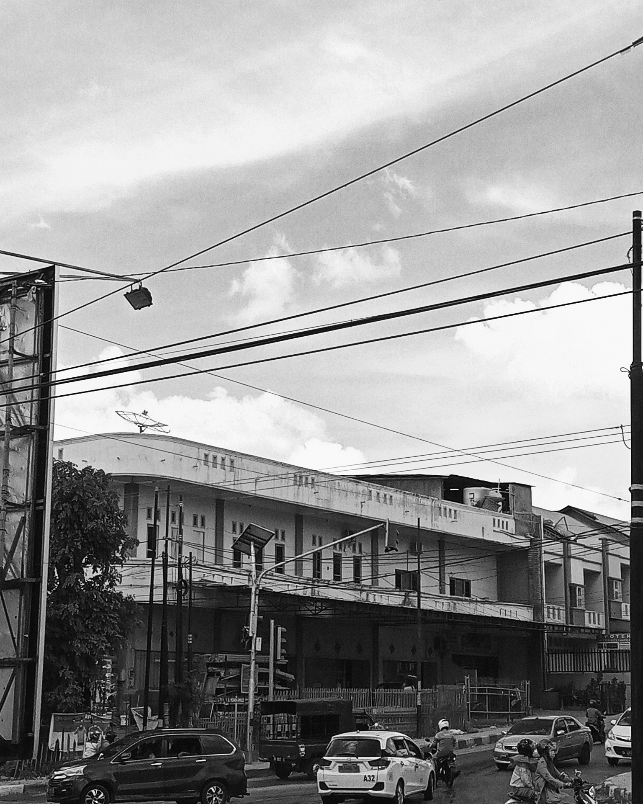
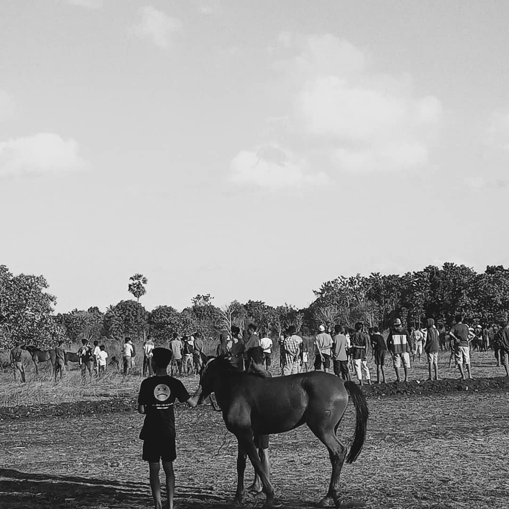
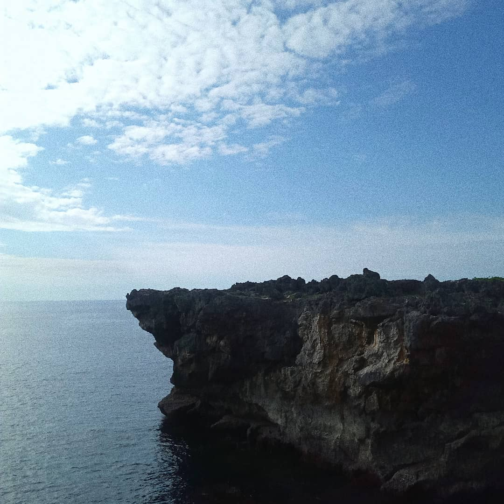

Ini adalah danau di Desa Wula, Sumba Timur. Danau ini terbentuk karena genangan air hujan yang begitu banyak, dan juga air luapan ketika banjir dari sungai terdekat. Liburan 2020 kemarin saya datang ke sini untuk memancing, sayangnnya ikannya masih terlalu kecil untuk dimakan.
Ini adalah suasana pagi hari di pantai Warna Oesapa ketika pasang surut. Tampak beberapa perahu nelayan dan beberapa tambak ikan di kejauhan.

Ini adalah suasana pinggir jalan di Kota Kupang. Kondisinya sangat kompleks, mulai dari kendaraan transportasi, bangunan, tiang listrik, lampu jalan dan kabel yang simpang siur.

Ini adalah suasana pacuan kuda di Sumba Timur. Anak-anak di sana sangat bangga dengan kudanya, bahkan yang tidak memiliki kuda menonton sampai memanjat ke atas pohon untuk mendapat pemandangan yang lebih baik. Orang dewasa juga bersemangat untuk taruhannya.

Tebing karang ini adalah salah satu sudut dari danau Wekuri, sebuah laguna di Kodi, Sumba Barat Daya.